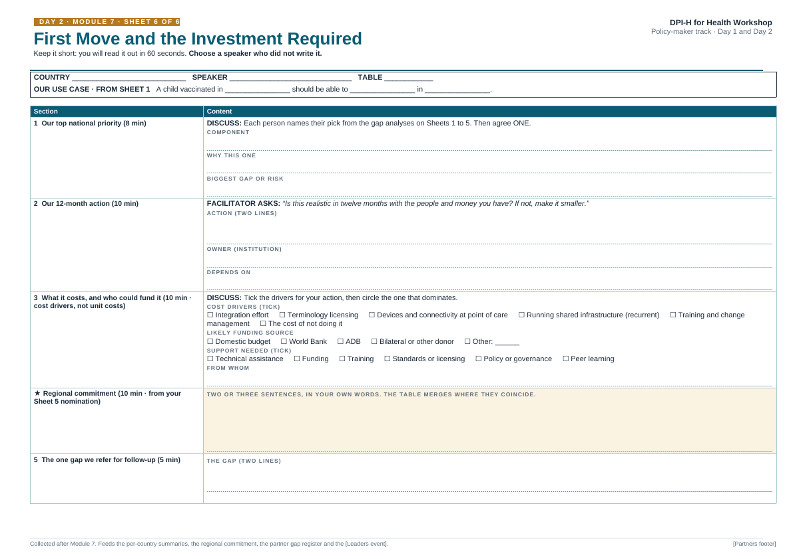

The Country Canvas is the A3 sheet set each table of the DPI-H for Health workshop’s policy-maker track fills in, over the two days of the workshop. It is a cover and Sheets 1 to 6, one country per table. It replaces the table sheets the journeys viewer drew before.
Downloads: Country Canvas, editable Word file (A3) · print-ready PDF (7 pages, A3 landscape)
Print one set per table, A3 landscape, at 100%. The Word file is the source. The PDF and the previews below are rendered from it.
How the canvas works
| Sheet | What you work on | When | Journey steps |
|---|---|---|---|
| 1 | Our journey and where it breaks. The immunization journey and the capabilities it needs. | Day 1 · M1 | All four journeys, rated Works / Partly / Breaks |
| 2 | Our architecture today. Your real digital capabilities needed for the use case, grounded in the components of the reference architecture (DPI-H). | Day 1 · M2 | J2b and the blocks every step draws on |
| 3 | Core data set, terminology and specifications. Data elements, who owns the national data set, and links to interoperability standards. | Day 1 · M3 | J2a, J3b |
| 4 | Trust, and who decides. Who signs and verifies, who holds the authority, and who needs to be part of decisions. | Day 2 · M4 and M5 | J1, J3a, J4.0a, J4.0b, J4.1 |
| 5 | Doing it together. A joint data model, shared testing, a connectathon, and the nomination. | Day 2 · M6 | J3b, J4.0b, J4.1 |
| 6 | First move and the investment required. | Day 2 · M7 | The step that breaks hardest |
The module × journey map shows which module meets which journey step, and the glossary gives each canvas term with the sheet where it matters most.
When you don’t have it yet: start from three patterns. Every sheet ends with the same eight-minute gap analysis. For each missing capability, ask whether it blocks you now. If it does, pick a pattern and name the debt it creates.
| Start narrow | Start shared | Start borrowed |
|---|---|---|
| One population, one credential, one facility type. e.g. Hajj Health Card | Build the foundation once for several programmes, not only for immunization. e.g. Registries across government | Adopt a regional or international artefact instead of authoring your own. e.g. the ICVP FHIR IG, the IPS, or a SNOMED subset |
Table rules. Every table does the same task. Each country grouping discusses, decides and documents it. If you cannot find agreement immediately, the disagreement is a finding: write it down too.
Cover
The country, table number, facilitators and delegation members (role and institution), how the canvas works, the three patterns and the table rules.

Sheet 1 · Our journey and where it breaks (Day 1, M1)
- Our use case (8 min): A child vaccinated in ___ should be able to ___ in ___.
- The journey (25 min): four touchpoints, each rated Works / Partly / Breaks for your country today: Vaccinated and recorded, Found and registered, A foreign record used for the next vaccine, Continuity across border. Draw a ★ where the journey breaks hardest.
- The capabilities this journey needs (7 min): identify the person; know the facility and the health worker; keep the record over time; make codes mean the same everywhere; work out what is due next; sign and verify the record; let the person hold it. The ticked capabilities carry onto Sheet 2.

Sheet 2 · Our architecture today (Day 1, M2)
Each block of the reference architecture (DPI-H), pre-filled from the country questionnaire and corrected by the table. For each block: the system used today and E (exists), P (partial) or A (absent). IMMZ marks the blocks this use case touches.
- Point-of-service applications: provider systems, the immunization app, CHW and outreach, the citizen app or wallet, the verifier app, supply chain, public health apps.
- DPI-H layer: decision support engine, HMIS, public health surveillance, benefits package registry; the client registry, lifelong health record, health workforce, facility and product registries, terminology service, logical information model repository.
- Foundational DPI: national digital ID, CRVS, trust services, data exchange, consent and privacy, notifications.
- Interoperability: the HIE or API gateway.
Then: standards we use today, where we disagreed, and which starred blocks could be shared regionally (carries to Sheet 5).

Sheet 3 · Core data set, terminology and specifications (Day 1, M3)
- Data elements (20 min): 15 elements from the immunization DAK, from the unique identifier (IMMZ.C.DE.1) to the issuer’s digital signature (ICVP core), each captured Same, Differently or Not at all. ✓ marks the elements also on the digital ICVP.
- Our terminology and specifications (5 min): SNOMED CT, ICD, LOINC, the terminology service, the national core data set, the national FHIR IG, the IPS and the SMART immunization DAK.
- Who owns it, and what we buy (5 min): who would own the core data set and run the terminology service, and what goes into the next procurement.

Sheet 4 · Trust, and who decides (Day 2, M4 and M5)
- Module 4 · Trust (18 min, name, don’t decide): the issuer who signs, where the person holds the credential, who checks it, who would hold the national trust anchor, and what the country already has (PKI, e-signature law, signed certificates issued before, GDHCN onboarding).
- Module 5 · Governance (30 min, name an institution, not a person): who holds the four decisions (architecture authority, standards mandate, core data set custodian, trust anchor) and on what formal basis; UNASSIGNED is a finding. Then the legal basis and the levers the country can actually pull.

Sheet 5 · Doing it together (Day 2, M6)
- Three propositions (25 min): A, a joint data model for the personal health record (IPS plus an immunization core, profiled once for the region); B, shared testing and an interoperability lab; C, a regional connect-a-thon within 12 months.
- Our nomination (35 min): the component or artefact to do once, regionally, why together, what the country would contribute and the first regional step. Collected at the 15:00 coffee.

Sheet 6 · First move and the investment required (Day 2, M7)
Read out in 60 seconds by a speaker who did not write it: the use case from Sheet 1; the top national priority; the 12-month action, its owner and what it depends on; what it costs and who could fund it (cost drivers, not unit costs); the regional commitment from Sheet 5; and the one gap referred for follow-up.
